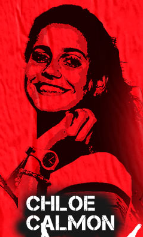
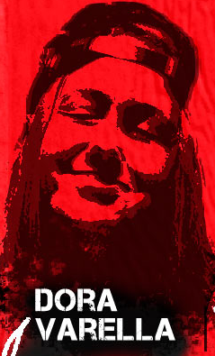
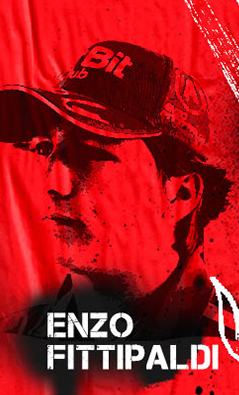
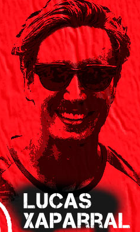
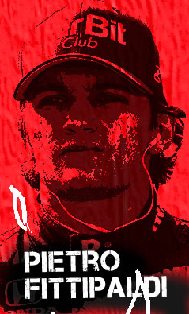
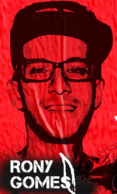

Chloe Calmon
Chloé começou a pegar onda aos 11 anos de idade e hoje, domina as ondas mais incríveis
ao redor do mundo, se tornando um dos maiores nomes do surf brasileiro na categoria
Longboarder.

Dora Varella
A skatista brasileira co-nheceu a paixão pelo skate aos 10 anos de idade, época em que
nem imaginava que hoje, estaria entre as 20 melhores skatistas do mundo pelo ranking da
World Skate.

Enzo Fittipaldi
Uma das grandes promessas do automobilismo brasileiro, esse jovem está mostrando a que
veio. Em 2016, se juntou à Academia de Jovens Pilotos da Ferrari.

Lucas Xaparral
Considerado um dos maiores skatistas brasileiros, Xaparral mostra toda a sua
persistência e garra que andam com ele desde os 3 anos, idade em que começou a andar de
skate.
Pamela Rosa
A Pamela é uma das maiores atletas do skate brasileiro. Começou cedo - aos 10 anos de
idade -, quando depois de muita insistência, ganhou um skate dos pais e, desde então,
está quebrando tudo por aí.

Pietro Fittipaldi
Garra e resistência são as palavras que mais descrevem Pietro Fittipaldi. Para ele,
aquela velha história do impossível nunca existiu, porque sempre soube o que quis e
trabalha duro todos os dias para chegar lá.

Rony Gomes
Para Rony, a paixão por esportes começou através do futebol, mas a brincadeira de skate
com os amigos do bairro se tornaria profissão e, em 2008, começou a quebrar tudo no
skate e conquistar os tão sonhados títulos.